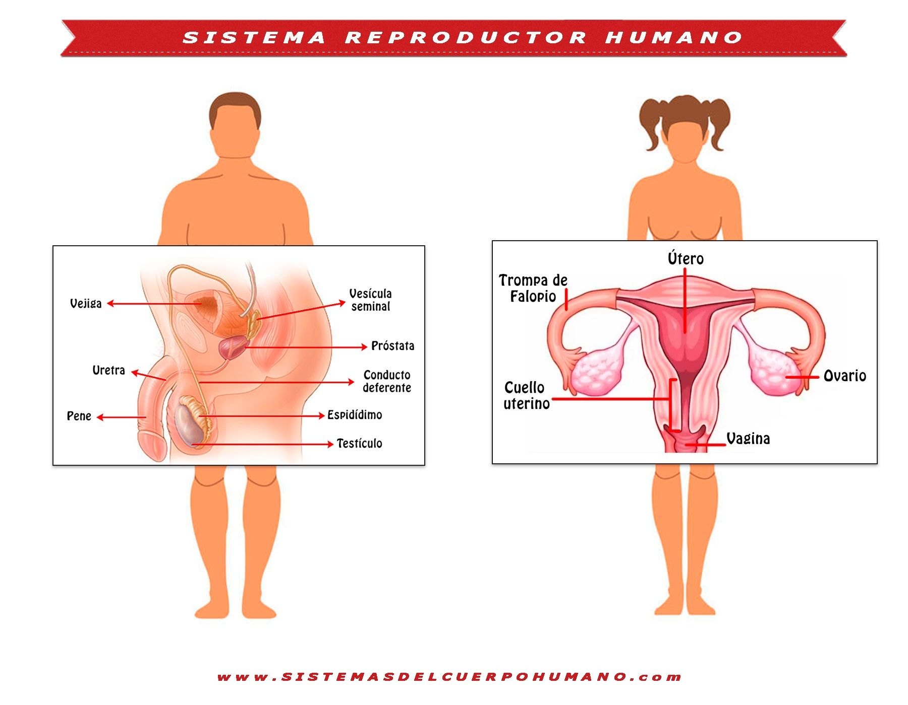

Sistema Reproductivo
Este es el sistema que garantiza al cuerpo humano su capacidad de procreación, o sea, de generar individuos nuevos de la especie. Dado que nuestra reproducción es siempre sexual, este aparato se distingue sustancialmente entre hombres y mujeres, de la siguiente manera:
- Aparato reproductor masculino. Está compuesto primeramente por el pene, un órgano altamente sensible que forman cuerpos cavernosos que pueden llenarse de sangre durante la excitación sexual, generando así la erección y endurecimiento del mismo, listo para penetrar en el aparato genital femenino. Luego están las glándulas sexuales externas del hombre, los testículos, ubicados en el escroto, en sacos independientes por debajo del pene. Allí se producen constantemente los gametos masculinos, los espermatozoides, junto a una sustancia que los acompaña y nutre, el semen, producida también gracias a la intervención de un órgano interno conocido como la próstata. Todo ello es eyaculado durante el coito dentro del cuerpo de la mujer, para que allí se produzca la fecundación.
- Aparato reproductor femenino. Al igual que el masculino, posee glándulas sexuales conocidas como ovarios, en donde se forman los gametos femeninos: los óvulos. Estos descienden hasta el útero por un canal conocido como trompas de Falopio una vez al mes, y de no ser fecundados son eliminados junto con la menstruación. Allí en el útero es donde se produce la unión de espermatozoides y óvulo, para dar origen a un cigoto del cual se producirá un feto. Durante el coito, el pene entra en el cuerpo femenino a través de la vagina, un canal que conecta los genitales externos (labios mayores y menores y el clítoris) con el útero.
-
